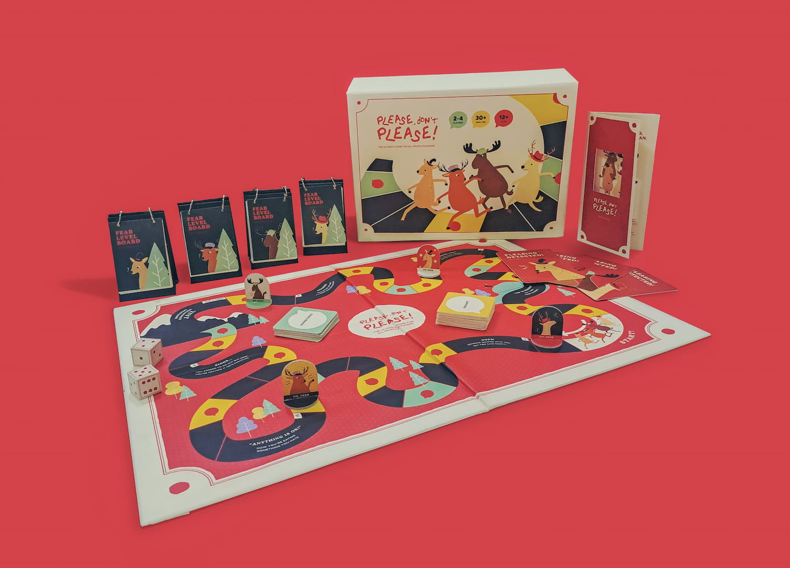
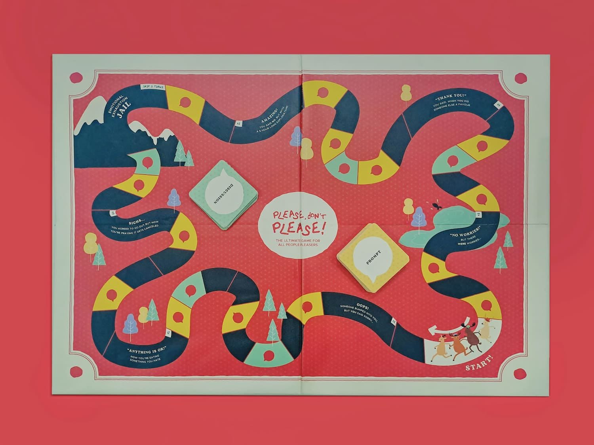
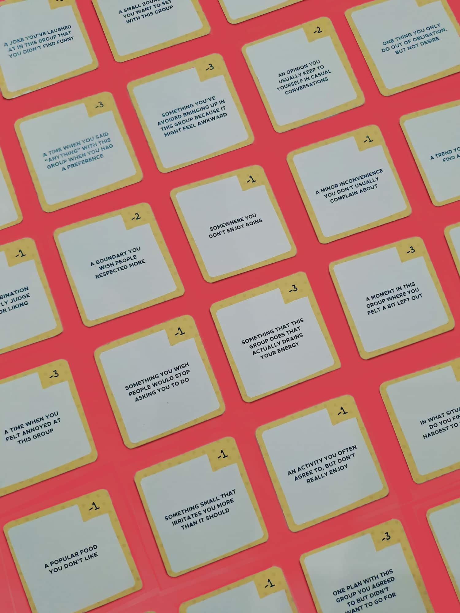
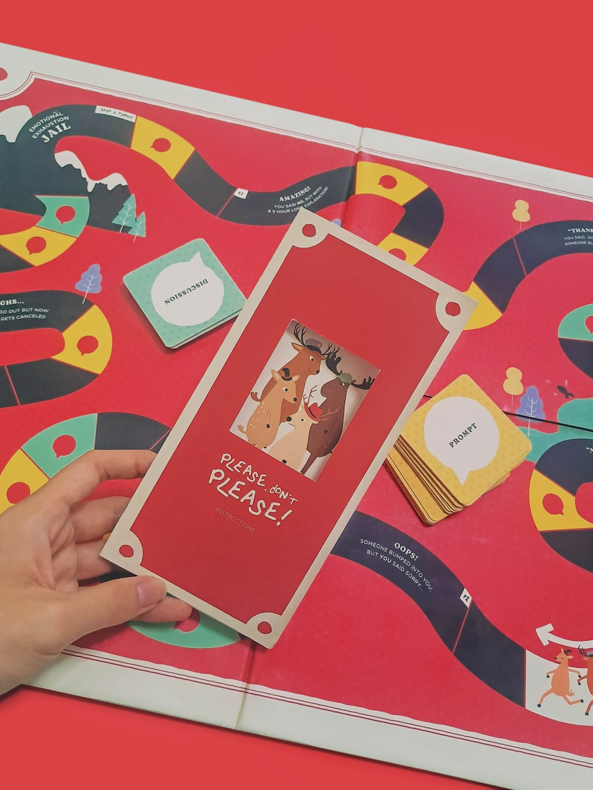
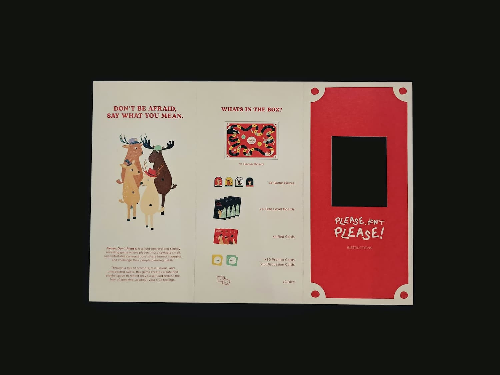
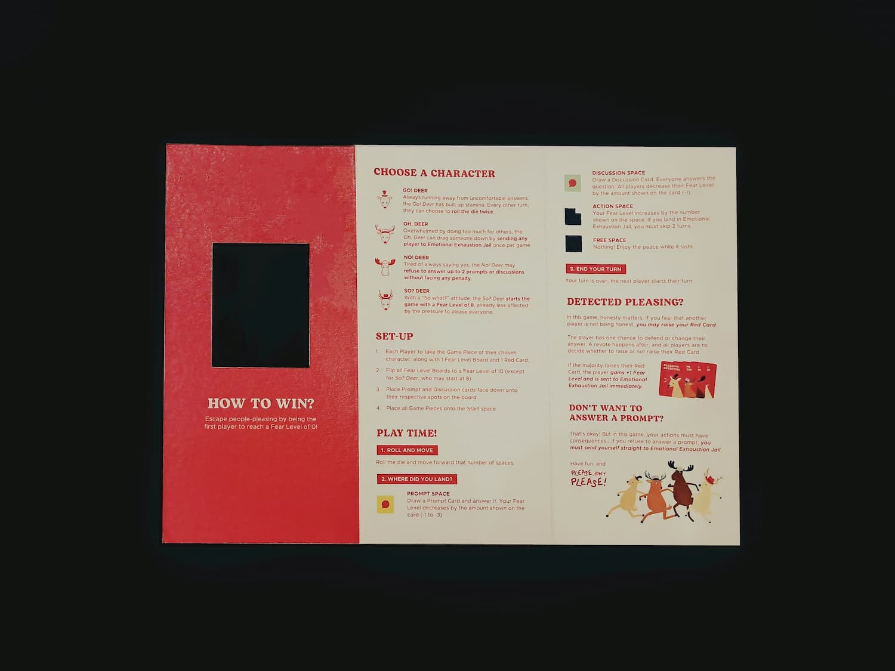
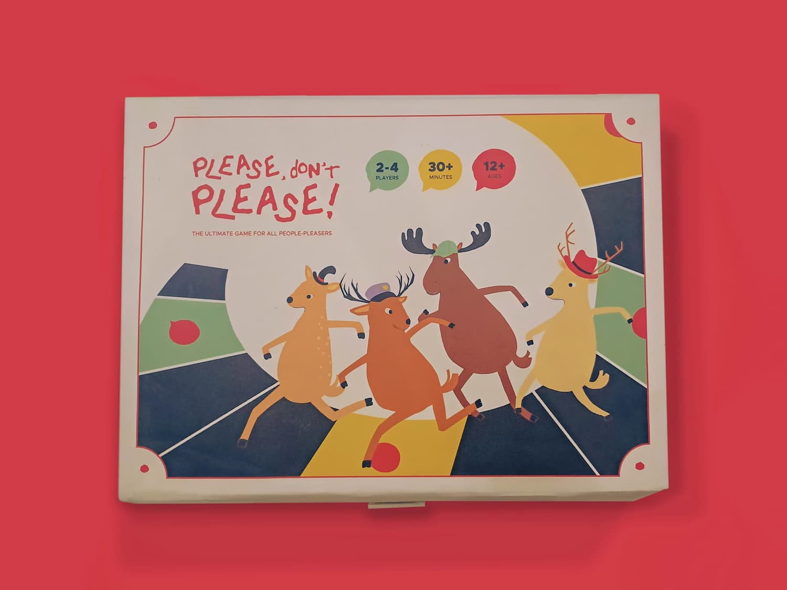
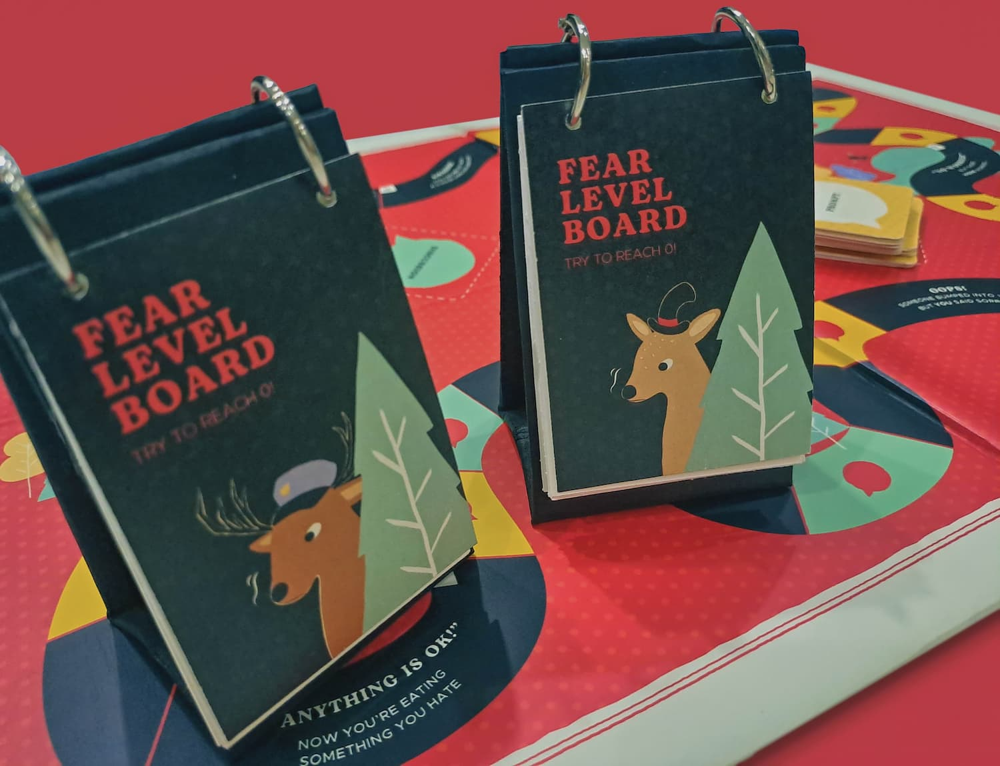
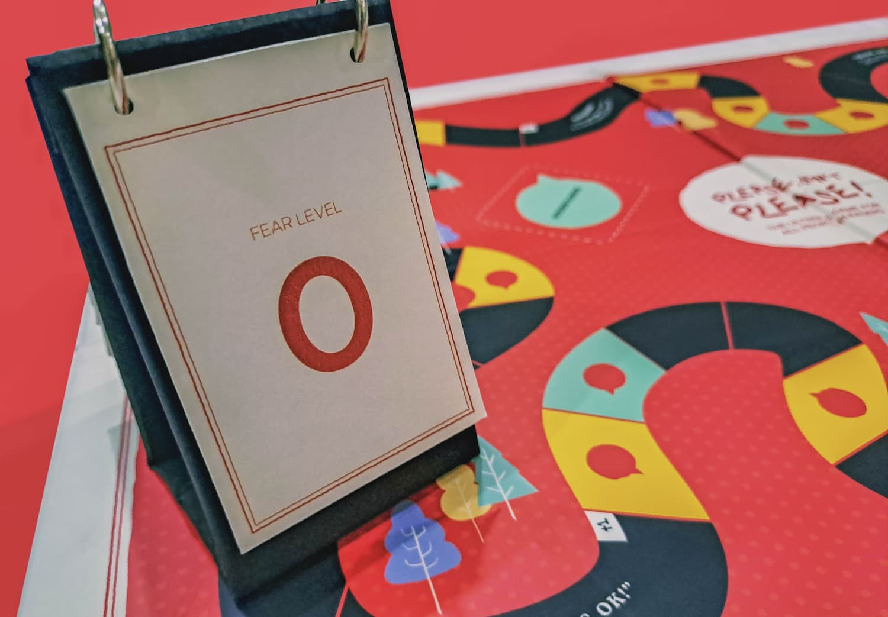
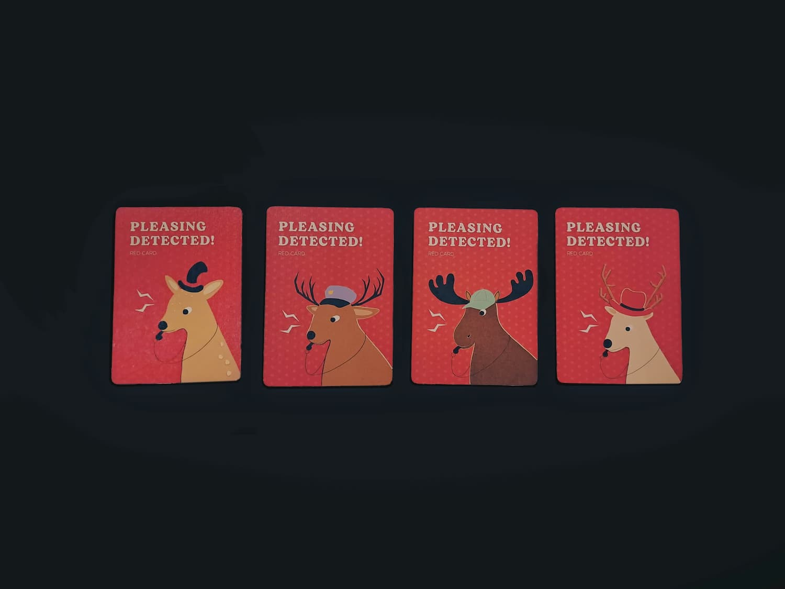

THE APPROACH
Through primary and secondary research conducted, the fear of conflict was found to be the biggest reason of people- pleasing. Hence, the design outcome aims to expose people to small uncomfortable talks in order to decrease this fear. Solutions that allowed people to hear other’s perspectives, struggles, and experiences was also found to be more effective, hence Please Don’t Please! was made to be multiplayer board game that prompts honest conversation between friends, making it less intimidating. The game simulates a journey of escaping people-pleasing, making real life struggles into a more fun experience. Through a mix of prompts, discussions, and unexpected twists, the game creates a safe and playful space to reflect on yourself and reduce the fear of speaking up about your true feelings.





CHARACTERS
As deers are a symbolism for fawning, a behaviour of people-pleasing, 4 playable deer characters with unique abilities were made.
GAMEPLAY
Each player receives a Fear Level Board, starting off with a Fear Level of 10. Each round, players takes turn to roll a die and go around the board, taking part in prompts and discussions to decrease their fear level. The first player to reach a Fear Level of 0 wins! To ensure everyone's honest in the game, players can call each other out by raising their red card if they feel that another player is people-pleasing!




TOOLS
Adobe Illustrator
Adobe Photoshop